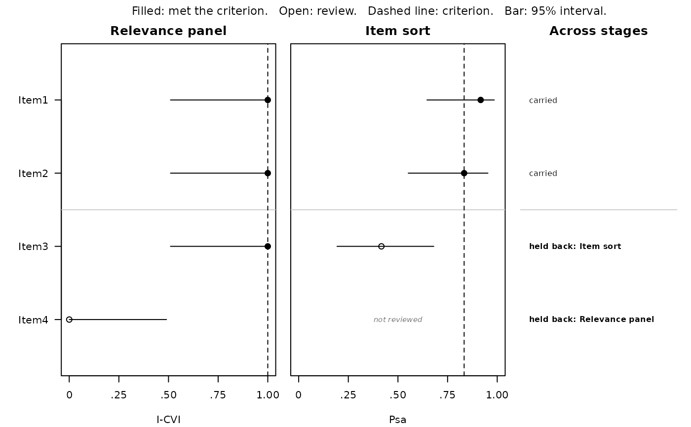
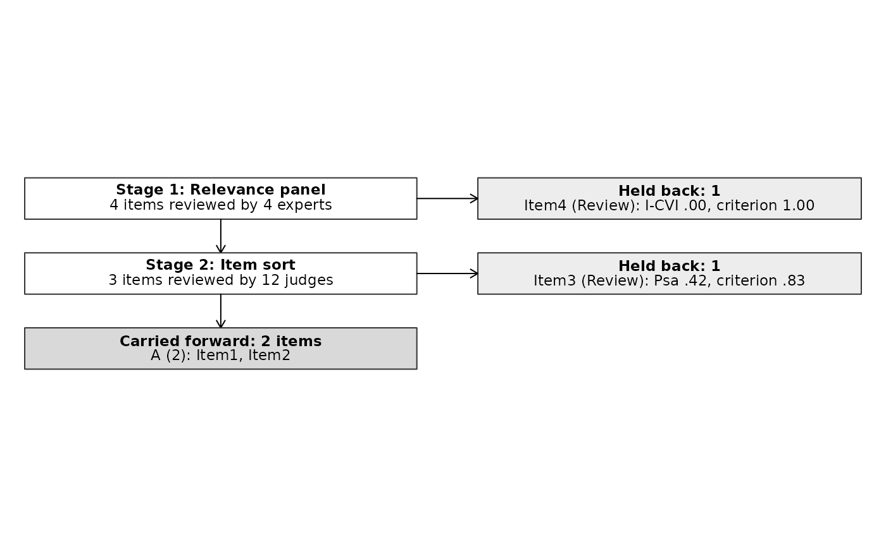
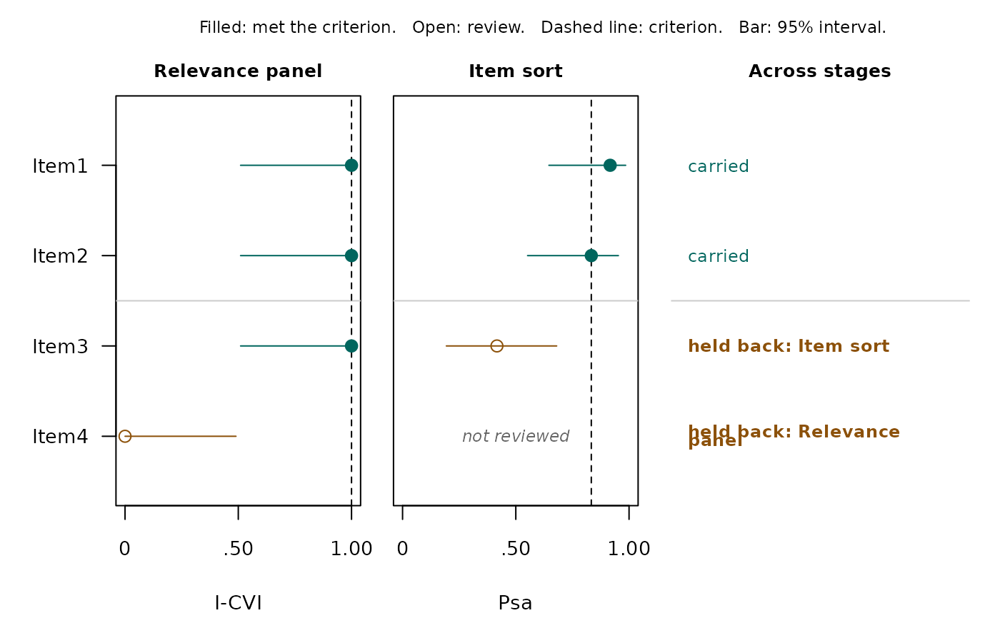

Brings the handoffs from several content-review stages together, so the
evidence for each item can be read, reported, and drawn as a whole. Give the
stages in the order they ran, such as an expert relevance panel and then an
item sort. Each stage can be a handoff from content_handoff() or a fitted
workflow, which is handed off with keep.
The result prints one row per item, with each stage's decision beside the statistic its rule read, and it draws two figures for a paper or poster:
plot(x), the item evidence profile. One panel per stage shows the statistic each decision read, its interval, and its criterion, and a last column names the stages that held an item back.plot(x, type = "flow"), the item flow diagram. Each stage's box says how many items it reviewed, a side box lists what it held back with the number behind each decision, and the last box lists what was carried forward.
Arguments
- ...
Handoffs from
content_handoff(), or fitted workflows thatcontent_handoff()accepts, in the order the stages ran. Name them to label the stages, as incontent_evidence(Panel = h1, Sort = h2). Unnamed stages are labeled by their workflow.- keep
Statuses carried forward when a stage is given as a fitted workflow rather than a handoff, as in
content_handoff(). A handoff already records what it carried, sokeepdoes not change it.
Value
An object of class contentvalid_evidence, a list with:
stagesthe handoffs, named by stage.
itemsevery item reviewed, in the order first reviewed.
evidenceone row per item per stage:
item,scale,stage,statistic,value,lower,upper,level,criterion,recommendation,status, andcarried.as.data.frame()returns it.flowfor each stage, the items it reviewed, those an earlier stage had already held back, those it held back itself, and those carried so far that it did not review.
carriedthe items carried by every stage that reviewed them.
Details
The statistic each stage shows is the one its decision rule reads, taken from the handoff:
an item sort: Psa, against the exact test's criterion;
an expert relevance panel: the I-CVI, against Lynn's (1986) count;
a Delphi study: the share of experts agreeing, against the consensus threshold;
an essentiality panel: the CVR, against the exact test's criterion;
congruence ratings: the IOC margin over the strongest competing objective, or the IOC when there is no target mapping;
construct ratings: HTC, with no criterion, because that workflow decides on its planned contrasts.
Decisions are read from each handoff, never recomputed from the statistic.
Stages in sequence or side by side. Usually a stage reviews only what the stage before it carried forward, and the flow diagram reads that way. When two methods reviewed the same items side by side, a stage's box says how many of its items an earlier stage had already held back, and its side box lists only the items it held back itself. Either way, an item is carried forward when every stage that reviewed it carried it.
Where the displays come from
The flow diagram is modeled on the PRISMA 2020 flow diagram for systematic reviews (Page et al., 2021), with items in place of studies. The evidence profile is this package's own design. It sets out each stage's statistic as a forest plot does, one panel per stage, so that agreement and disagreement between methods can be seen item by item. Neither computes anything new: both draw the statistics and decisions the stages already made.
References
Lynn, M. R. (1986). Determination and quantification of content validity. Nursing Research, 35(6), 382–385. doi:10.1097/00006199-198611000-00017
Page, M. J., McKenzie, J. E., Bossuyt, P. M., Boutron, I., Hoffmann, T. C., Mulrow, C. D., Shamseer, L., Tetzlaff, J. M., Akl, E. A., Brennan, S. E., Chou, R., Glanville, J., Grimshaw, J. M., Hróbjartsson, A., Lalu, M. M., Li, T., Loder, E. W., Mayo-Wilson, E., McDonald, S., . . . Moher, D. (2021). The PRISMA 2020 statement: An updated guideline for reporting systematic reviews. BMJ, 372, Article n71. doi:10.1136/bmj.n71
See also
content_handoff() for a single stage, and
plot.contentvalid_evidence() for the two figures.
Examples
relevance <- matrix(
c(4,4,4,3, 4,4,3,4, 3,4,4,4, 2,2,1,2),
nrow = 4,
dimnames = list(NULL, paste0("Item", 1:4))
)
panel <- expert_validity(relevance, mode = "relevance", lo = 1, hi = 4,
agreement = "none")
# The sort reviews the three items the panel carried forward.
sorts <- data.frame(
item = rep(paste0("Item", 1:3), each = 12),
rater = rep(1:12, 3),
target_construct = rep(c("A", "A", "B"), each = 12),
assigned_construct = c(rep("A", 11), "B", rep("A", 10), "B", "B",
rep("B", 5), rep("A", 7))
)
evidence <- content_evidence(`Relevance panel` = panel,
`Item sort` = sort_validity(sorts))
evidence
#> Content evidence across 2 stages
#> --------------------------------
#> 2 of 4 items carried by every stage that reviewed them. Held back: Item3
#> (Item sort), Item4 (Relevance panel).
#>
#> Stages, in order
#> 1. Relevance panel: 4 items, 4 experts. Shows I-CVI.
#> 2. Item sort: 3 items, 12 judges. Shows Psa.
#>
#> item Relevance panel Item sort result
#> Item1 1.00 Strong support .92 Retain carried
#> Item2 1.00 Strong support .83 Retain carried
#> Item3 1.00 Strong support .42 Review held back: Item sort
#> Item4 .00 Review -- held back: Relevance panel
#>
#> What these columns mean
#> I-CVI -- Item-level Content Validity Index. Share of experts rating the
#> item relevant, compared with Lynn's criterion for the panel size.
#> Psa -- Proportion of Substantive Agreement. Share of judges who put the
#> item in the construct it was written for (0 to 1; higher is
#> stronger).
#> result -- carried when every stage that reviewed the item carried it;
#> otherwise the stages that held it back. -- marks a stage that did not
#> review the item.
#>
#> Figures: plot(x) for the evidence profile, plot(x, type = "flow")
#> for the flow diagram; add apa = FALSE for color.
#>
#> Full definitions: contentvalid_glossary(). To hide this key:
#> options(contentvalidR.show_key = FALSE).
plot(evidence)

plot(evidence, type = "flow")

plot(evidence, apa = FALSE)
